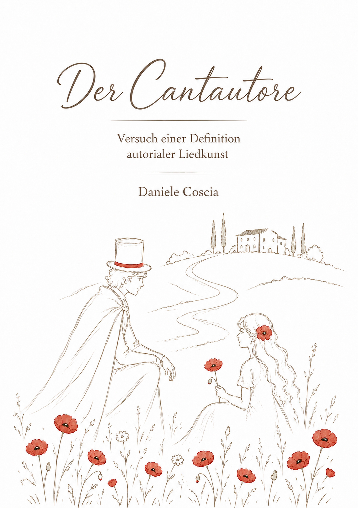

Ein Buch von
Daniele Coscia
Autor und Kulturessayist
Was macht ein Lied zu einer persönlichen künstlerischen Aussage?
Eine kulturhistorische Betrachtung der besonderen Verbindung von Text, Musik und Interpretation.
Der Cantautore steht für eine Form musikalischer Autorschaft, in der der Künstler nicht nur interpretiert, sondern seine eigene Perspektive formuliert.
Dieses Buch untersucht die Verbindung von Lied, Literatur und persönlichem Ausdruck und fragt nach den Merkmalen autorialer Liedkunst.
Einblicke in ausgewählte Kapitel und Gedanken aus dem Buch.
Analysen ausgewählter Lieder im Spannungsfeld zwischen künstlerischer Autorschaft und künstlicher Intelligenz.
Daniele Coscia ist Autor und Kulturessayist. Seine Arbeit beschäftigt sich mit Musik, Kulturgeschichte und den Formen künstlerischer Ausdruckskraft.
Kontaktinformationen folgen.